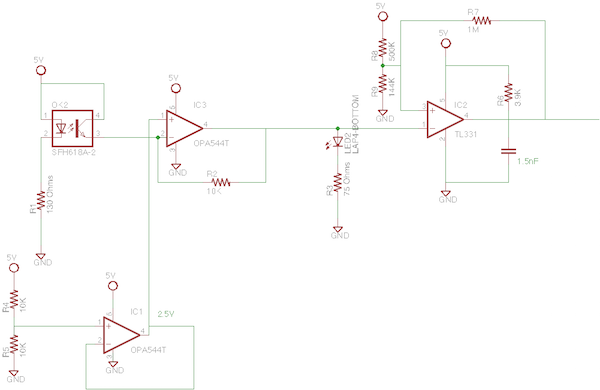
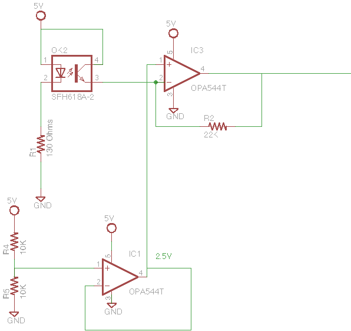

DrizzyBot / Cheff Curry - Sub Systems
You can download Grayscale for free on the preview page at Start Bootstrap.
Mechanical Design
You can download Grayscale for free on the preview page at Start Bootstrap.
Electrical Design
We broke the electrical system down into a few different circuits that were linked together.
Power Supply, Drive Train, Tape sensing, shooter mechanism
Generally our circuits were pretty solid. The biggest issue we encountered was when we swapped chasis. We had used the double sided tape on the bread boards to fix them to the first bot. When we removed them the tape completely destroyed our circuits!!! DON'T DO THAT.

a photo of our circuits on the bot
Schematics

drivetrain schematic

power supply schematic
Tape Sensing
In our original design we attempted to create a digital input to the Arduino from each tape sensor. This design had three components to it.
First, we tied the anode of the photodiode to 5V and placed an 130 ohm resistor between its cathode and ground. This was done to ensure that the current going through the photodiode was large enough to be detected by the phototransistor but also not large enough to damage the component.
Equation 1: (Vdd-Vf)< 40ma => (5V-0V)/40ma < R => R > 125 ohms
Equation 2: (Vdd-Vf)> 20ma => (5V-1.7V)/20ma > R => R < 165 ohms
Second, we used an op-amp to amplify the signal. Here the positive input of the op-amp is tied to another op-amp that is generating a stable 2.5V. Using our ideal op-amp model this means that the op-amp will work as hard as it can to keep the negative input at 2.5V. As a result there is always a (5V-2.5V) = 2.5V drop across the phototransistor, which satisfies the forward voltage drop required for it to function properly. Since the current from the phototransistor cannot pass through the op-amp it can only travel through the resistor that connects the output to the negative input. As a result there is a voltage drop from the negative input to the output that is equal to the current from the photodiode multiplied by the resistor. Therefore our equation describing the output voltage as a function of the photodiode current is as follows:
Equation 3: Vo - V- = -IR => Vo = V- -IR => Vo = 2.5V - IR
We saw the voltage range from 2-2.5 when the tape sensor was about a quarter inch from the tape to .5 when the tape sensor was a quarter inch from the white board. We also tied an LED to the output of this stage, to give us visual confirmation that the circuit was generating the expected result. We used similar calculations to the ones used in stage 1 to determine that a 75 ohm resistor was required to limit the current through the diode. THIS WAS EXTREMELY HELPFUL! If you can use LED's to indicate what is happening in your circuits it makes it much easier to figure out what is going wrong while you are debugging.
The final stage of the circuit was meant to convert the signal from the op-amp to a logical 1 or 0 for the Arduino using a comparator with hysteresis. We eventually ended up dropping this stage of the circuit in our final design and used analoge input pins to read the output signal from the op-amp stage directly. This was done for a few reasons. First, the Arduino Uno only has 2 pins that can be configured to generate interrupts on rising or falling signals. Since our design uses 3 tape sensors, we couldn't take advantage of the speedy response time that interrupts offer. Second, the amount of ambient light in the lab changed the output of the op-amp stage enough that it was difficult to get the comparator stage to accurately determine if it should generate a 1 or 0. This could have been avoided if we had used an oscillator to generate the signal from our photodiode and then filtered out any signal from ambient light. In the end we decided the easiest thing to do would just be to handle the hysteresis and logic level conversion in software. I would recommend this to anyone. You only have two weeks and changing or debugging software is much easier than changing and debugging hardware.
Original Tape Sensing Circuit Design
Final Tape Sensing Circuit Design
Software Design
You can download Grayscale for free on the preview page at Start Bootstrap.